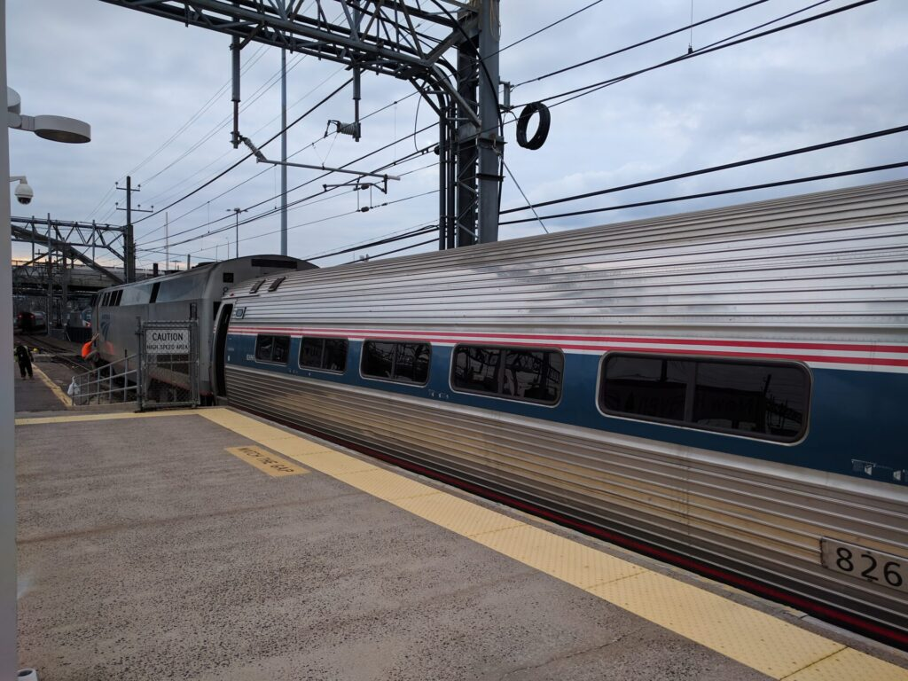
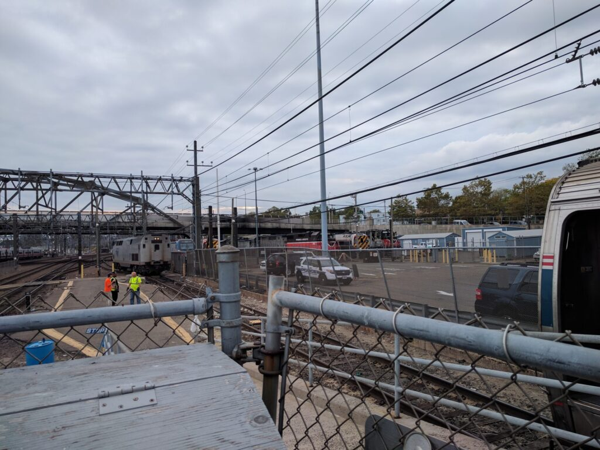
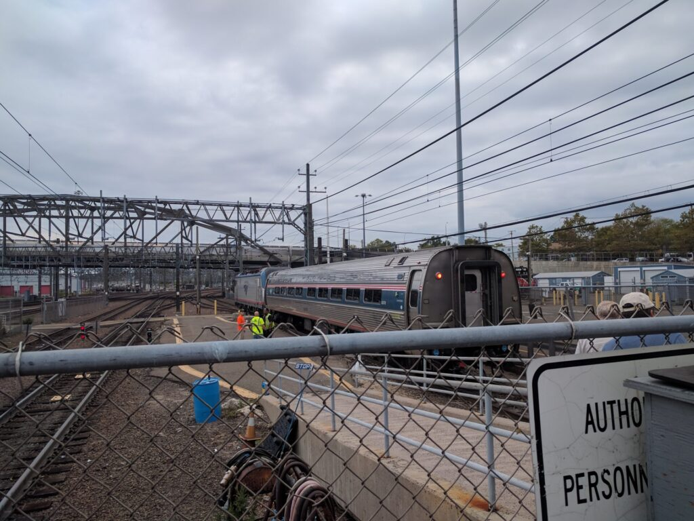

Beginning with a round-trip to Brattleboro, Vermont, in March 2013 for HighEdWeb New England, I made at least one round-trip on the Vermonter every year between 2013 and 2017, and then two more in 2019. I’ve logged 3,033 miles since 2013. I’ve made a couple of firsts aboard it as well: my first trip east of New York on the Northeast Corridor, and my first trip east of Springfield on CSX’s Boston Subdivision.
The Vermonter makes a daily run from Washington, DC, to St. Albans, Vermont, just shy of the Canadian border. It uses Amtrak’s Northeast Corridor from Washington, DC, to New Haven, Connecticut (via New York City), then turns north to follow the Connecticut River through Springfield, Massachusetts, into Vermont. I’ve never been further north than Bellows Falls, Vermont; normally I don’t even take it into Vermont. I’ve also never taken it west of New York, not that there’s a reason to.
The Vermonter has some unusual features. Up until the end of 2014, it made a backup move at Palmer, east of Springfield, to continue north toward Vermont. This took a good twenty minutes as the Vermonter pulled past the crossing the connecting track, stopped, the crew manually threw a switch, then reversed direction. It’s a J-turn, but on a railroad. The state acquisition of the Connecticut River Line, completed at the end of 2014, eliminated this operation, though for good measure the Vermonter still backs in and out of Springfield Union Station.
Another unusual feature is the engine change at New Haven. The tracks north of there are not electrified. Amtrak uses an electric locomotive–an EMD AEM-7 when I started taking the Vermonter, now the Siemens ACS-64–to haul the Vermonter between Washington and New Haven. At New Haven, power to the train is shut down, the locomotive is uncoupled, and a diesel locomotive (usually a GE Genesis) replaces it. Power is restored, the crew does a brake test, and we’re on our way.
The whole process takes around 10-15 minutes. During that time the lights are off inside, so I always take the opportunity to head out on the platform and supervise, as it were. Plenty of other passengers take the air as well, and a few others, like me, wander down to the end of the train to watch the operation.



Scenes from an engine change in 2017; see full-size pictures in the gallery.
Engine changes also occur in Washington, where trains heading to south exchange electrics for diesels, but the platforms there are low-level and you can’t easily watch what’s happening. The only other comparable experience, for me anyway, is hanging around at Albany-Rensselaer as the Lake Shore Limited is reassembled.